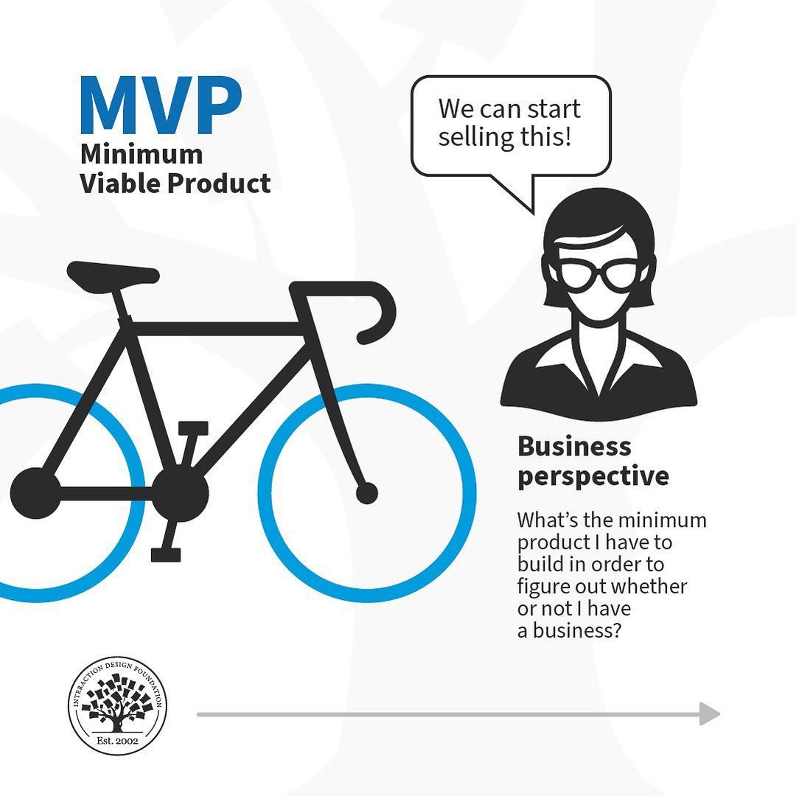
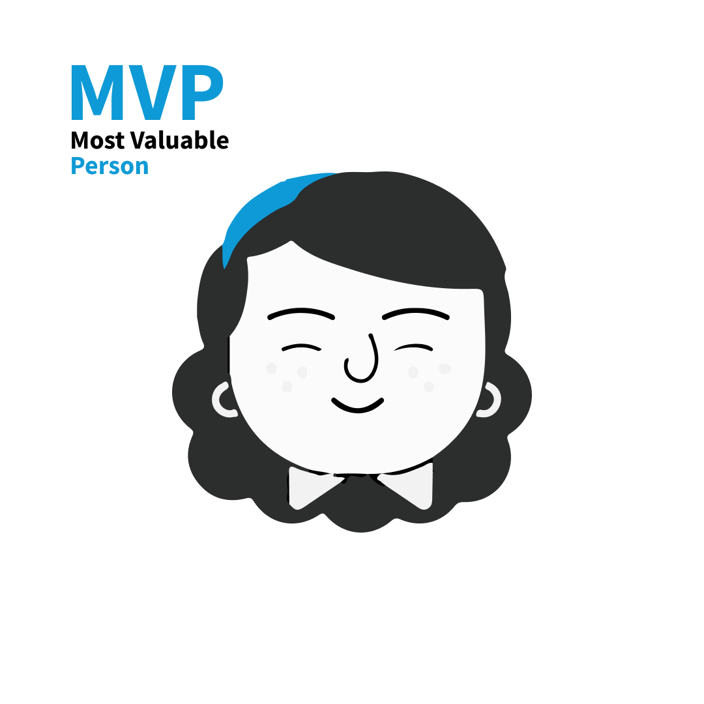
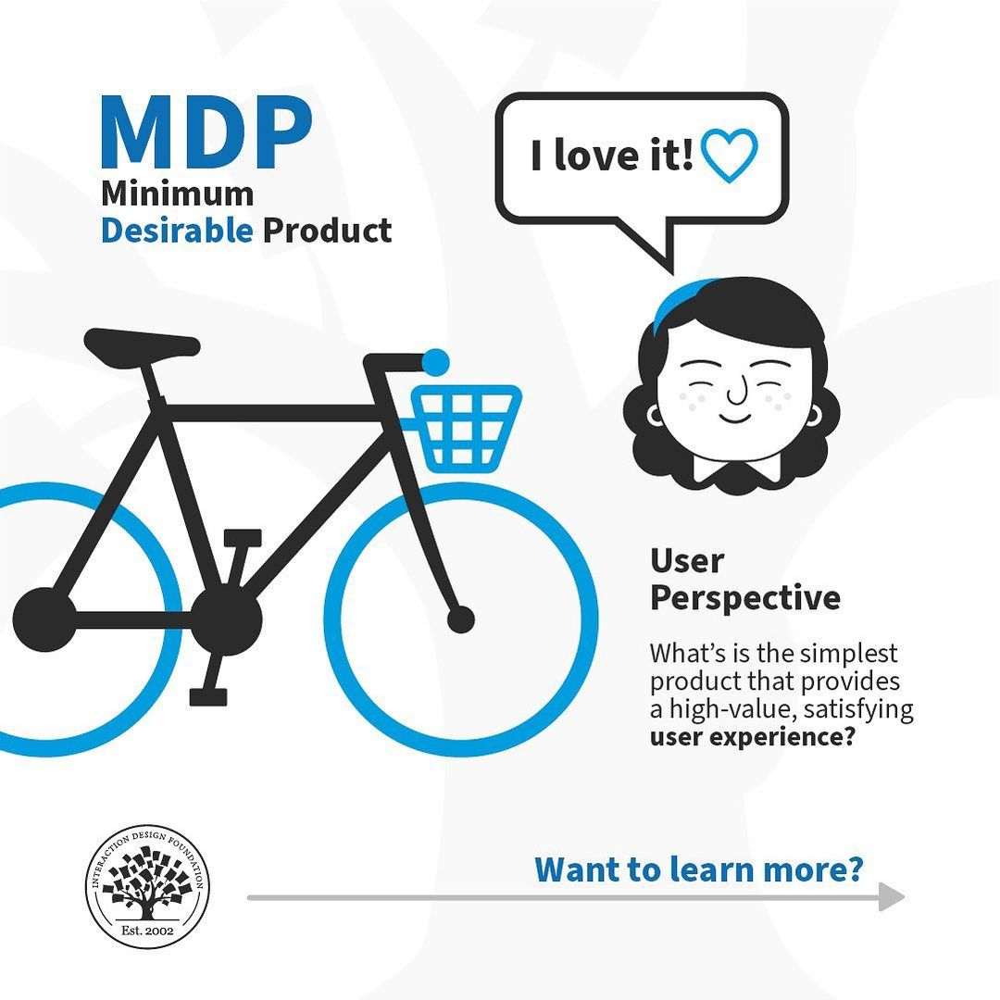
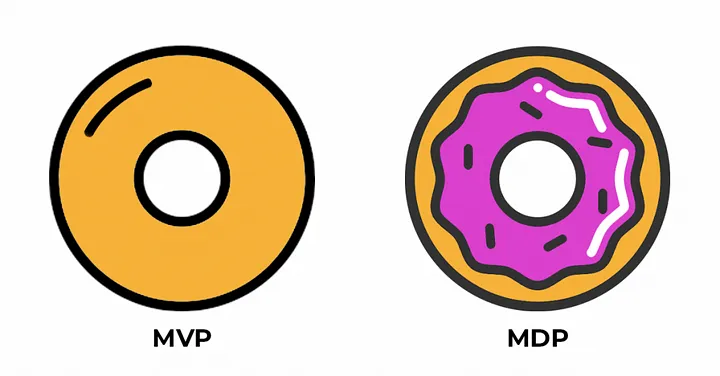

The establishment of the Minimum Viable Product is crucial for adding definition to your decision making and represents the core concept that you want to create. It is the conduit or vehicle for you to reach your research goal and represents the leanest possible version of a product that you could release to market that would effectively help to answer the questions behind your research. Ultimately, the Minimum Viable Product represents the primary functionalities without much embellishment or bonus features. It’s contains the essential ingredients only.

The Most Valuable Person references the user segment and persona that brings the most value to the business, service or product. For all intents and purposes it it the group that brings the most reward and promise and essentially targeting this group should answer the ultimate question of who is this product for. Who is the focused group that you believe should be aimed at.

The Minimum Desirable Product represents the concept of establishing a suite of features that step beyond the core functionality and demonstrates an idea that provides exceptionally high value. It is not simply concerned with core functionality alone but others a more refined vision with added features and styles that could add maximum value to both the business and customer.
